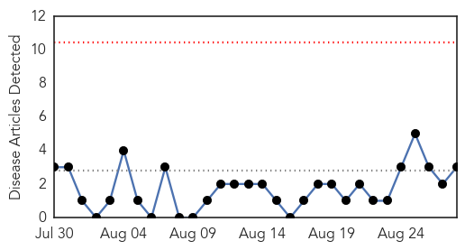
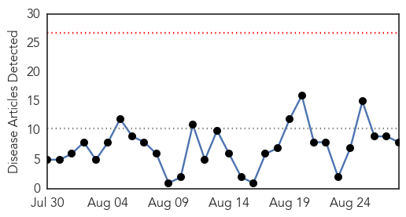
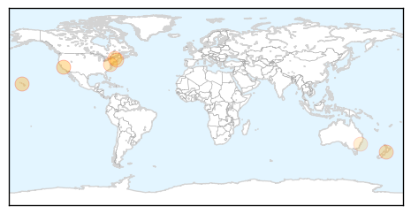

Swine Flu
30-Day Web Trend
0 alerts, 0 warnings

30-Day Twitter Trend
0 alerts, 0 warnings

Article Locations
Article Confidences

Top Articles:
Top Tweets:
-
No tweets found for Aug 28, 2015
Influenza
30-Day Web Trend
0 alerts, 0 warnings

30-Day Twitter Trend
3 alerts, 0 warnings

Article Locations
Article Confidences

Top Articles:
- 0.998
- Look out! 271 new vaccines are coming your way -- Health & Wellness -- Sott.net
- 0.993
- There are 271 New Vaccines in Big Pharma’s Pipeline
- 0.858
- Does having a fever mean your infection is bacterial rather than viral?
- 0.803
- 97 years ago the US flu pandemic began in Boston
- 0.751
- August 28, 2015 Archives
- 0.751
- August 27, 2015 Archives
- 0.572
- UMD researchers recieves IARPA support to study testing methods for influenza
- 0.516
- Studies Now Indicate that Vaccinations Can Have Additional Protective Benefits
Top Tweets:
-
No tweets found for Aug 28, 2015